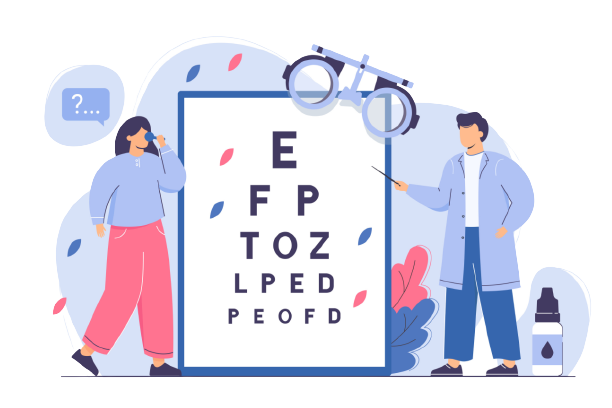

Si Dipem
Si Dipem adalah website yang menyediakan informasi diagnosa penyakit mata. Terdapat rekomendasi serta sistem konsultasi untuk anda. Segera Konsultasikan keluhanmu!
Si Dipem adalah website yang menyediakan informasi diagnosa penyakit mata. Terdapat rekomendasi serta sistem konsultasi untuk anda. Segera Konsultasikan keluhanmu!